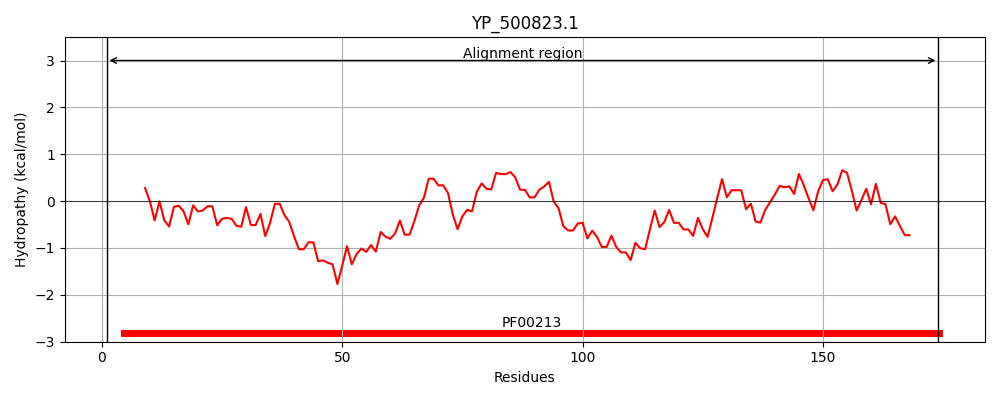
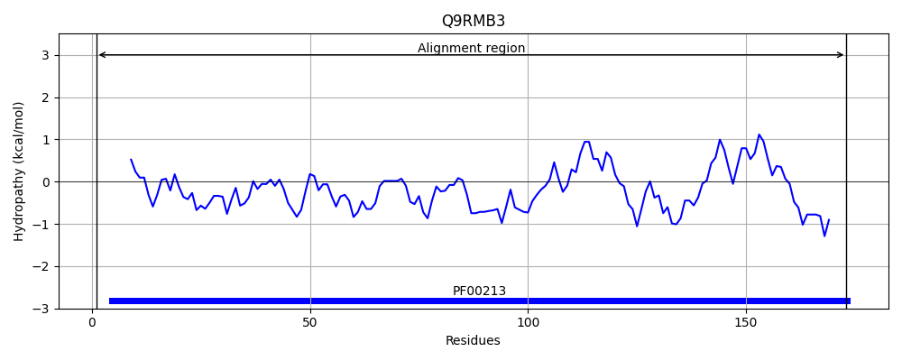
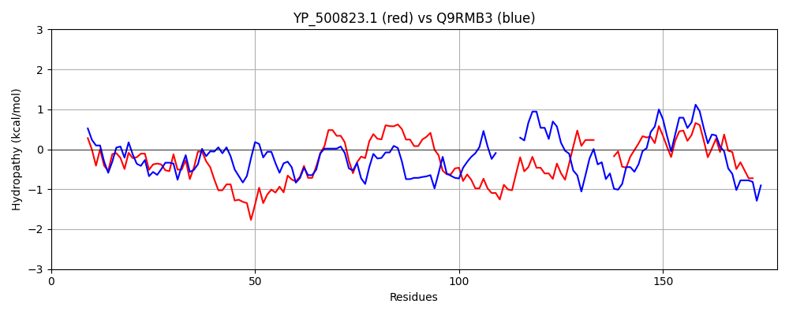

Hit Accession: Q9RMB3
Hit TCID: 3.A.2.1.5
Hit Description: gnl|BL_ORD_ID|18867 gnl|TC-DB|Q9RMB3|3.A.2.1.5 ATP synthase subunit delta OS=Acetobacterium woodii GN=atpH PE=3 SV=1
Mach Len: 178
e:0.000000
Query TMS Count : 0
Hit TMS Count: 0
TMS-Overlap Score: 0.000000
Predicted Substrates:CHEBI:9175;sodium(1+)
BLAST Alignment:
Score: 210 , Bit scores: 85 bits, E-value: 2.3e-21, Alignment length: 178, Percentage identity: 28
Query: 1 MVKVANKYAKALFDVSLDTNNLETINEELTVINEAVKDKIEQLRMVDSNPTQTAEQRRELINGVFTDINPYIKNMMYVLADNRHISLIADVFKAFQSLYNGHYNQDFATIESTYELSQEELDKIVKLVTQQTKL----SKVIVDTKINPDLIGGFRVKVGTTVLDGSVRNDLVQLQRK 174
M VA+KYA+ALFDV++D + L+ I + + + + + ++ + T E++ L+ + + N Y+KN + +L D I D+++AF+ L N H N A + L+ LD+ +++ ++ KVI++ +I+ ++GG V VG ++DGS++N L Q++++
Sbjct: 1 MSLVASKYARALFDVAVDKDQLDEIFSDFKTATDLFSSEKKFMDLMLTPSLNTGEKKGILMRSLESLSNQYVKNYLMILMDKNRFEDIFDIYEAFRKLCNEHKNLVEARV-----LTVIPLDETLRIALEENLAKRFNKKVILENEIDKSILGGAVVYVGDQIIDGSIKNQLSQMKKQ 173 | Protein Hydropathy Plots: |
|---|
|  |  |
Pairwise Alignment-Hydropathy Plot:
|
|---|
|  |